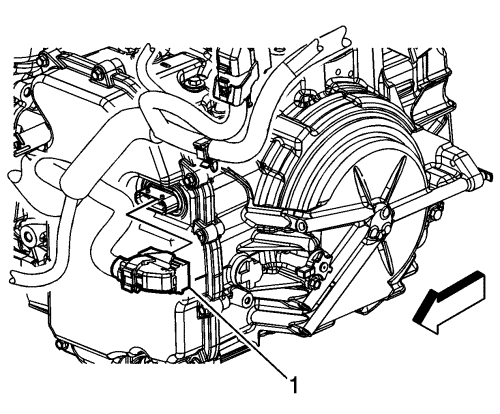
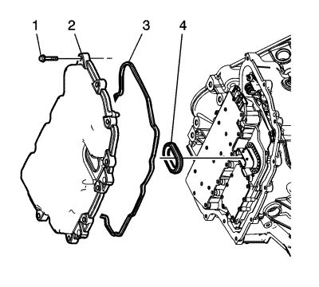
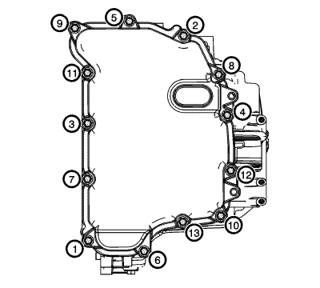

Sustitución de la tapa del cuerpo de válvulas de control — LNP
Procedimiento de desmontaje
- Desmonte la bandeja de la batería. Consultar Sustitución de la bandeja de la batería .
- Elevar el vehículo y soportarlo de manera segura. Consultar Elevación y soporte en alto del vehículo .
- Retirar el protector de salpicaduras del habitáculo frontal. Consultar Sustitución de la pantalla antisalpicaduras del compartimento delantero .
- Vacíe el aceite del cambio.
- Bajar el vehículo.
- Desmonte la tubería de entrada del refrigerador de aceite del cambio de la caja de cambios. Consultar Sustitución de la tubería de entrada del refrigerador del aceite del cambio .
- Desmonte el tubo de salida del enfriador de aceite del cambio de la caja de cambios. Consultar Sustitución de la tubería de salida del refrigerador de aceite del cambio .
- Tapone y/o tape las tuberías y el cambio para evitar la contaminación.

- Desconecte el módulo de control del cambio (TCM) del conector eléctrico (1) y, a continuación, suelte el conector del cambio.
- Retire el motor de arranque del mazo de cables de la caja de cambios. Retire el perno del seguro de la tapa del cuerpo de válvula. Suelte el mazo de cables del seguro de la tapa del cuerpo de válvula y el soporte del cable de selección de posición.

- Extraiga los tornillos de la tapa del cuerpo de válvula de control (1).
- Retire la cubierta del cuerpo de válvula.
- Retire la junta de la cubierta del cuerpo de válvulas control.
Atención: Al desmontar la junta, sujete el conjunto de la válvula solenoide de control alrededor del conector. Una fuerza de tracción excesiva podría dañar las conexiones eléctricas internas.
- Extraiga el sellado de orificio de conector de cables de la tapa del cuerpo de válvula de control.
- Elimine todos los restos del material de junta antiguo. Limpie las superficies de la carcasa de la caja de cambios y de las juntas de la cubierta del cuerpo de válvula de control.
Procedimiento de montaje
- Monte el sellado de orificio de conector de cables de la tapa del cuerpo de válvula de control (4).
- Monte la junta de la tapa del cuerpo de válvula de control (3) en la tapa del cuerpo de válvula de control.
- Monte la tapa del cuerpo de válvula de control (2).
- Apriete con la mano los tornillos de la tapa del cuerpo de válvula de control (1).
Precaución:Consulte Precaución con las fijaciones en la sección Prólogo.

Nota: Monte a mano todos los tornillos y pernos de la tapa del cuerpo de válvula de control y, a continuación, apriete todos los tornillos y pernos en orden.
- Monte los tornillos de la tapa del cuerpo de válvula de control. Apriete los tornillos por orden hasta 12 N·m (106 lib. pulg.).
- Conecte el módulo de control del cambio (TCM) del conector eléctrico (1) y, a continuación, fije el mazo de cables a la caja de cambios.
- Monte el motor de arranque del mazo de cables en la caja de cambios. Monte el perno en el seguro de la tapa del cuerpo de válvula. Fije el mazo de cables del seguro en la tapa del cuerpo de válvula y el soporte del cable de selección de posición.
- Elevar el vehículo
- Monte la pantalla antisalpicaduras del compartimento delantero. Consultar Sustitución de la pantalla antisalpicaduras del compartimento delantero
- Bajar el vehículo.
- Monte la tubería de salida del refrigerador de aceite del cambio en la caja de cambios. Use una NUEVA arandela de estanqueidad. Consultar Sustitución de la tubería de salida del refrigerador de aceite del cambio .
- Monte la tubería de entrada del refrigerador de aceite del cambio en la caja de cambios. Use una NUEVA arandela de estanqueidad. Consultar Sustitución de la tubería de entrada del refrigerador del aceite del cambio .
- Llene la caja de cambios con el aceite apropiado.
- Compruebe el nivel de aceite del cambio. Consultar Comprobación del nivel y el estado del aceite del cambio .
- Compruebe si hay fugas.
- Monte la bandeja de la batería. Consultar Sustitución de la bandeja de la batería .
| © Copyright Chevrolet. Reservados todos los derechos |